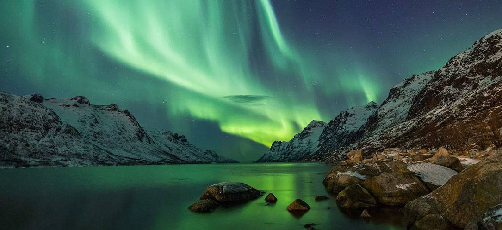
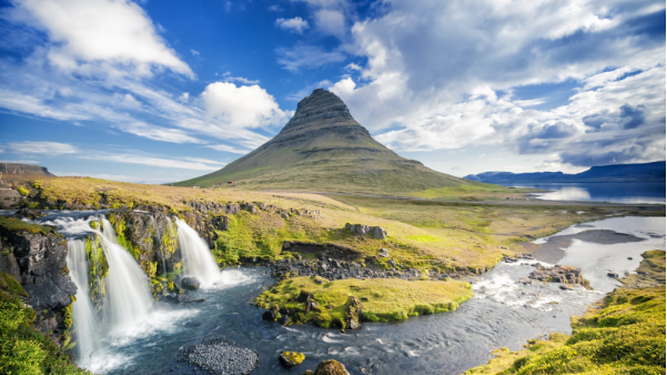
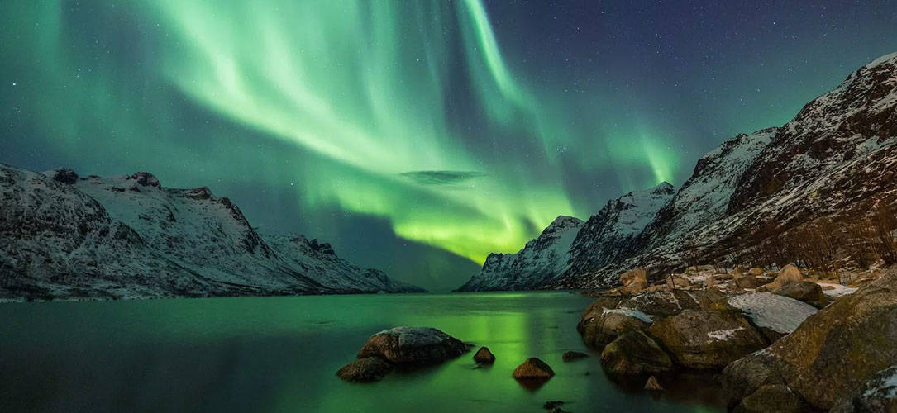
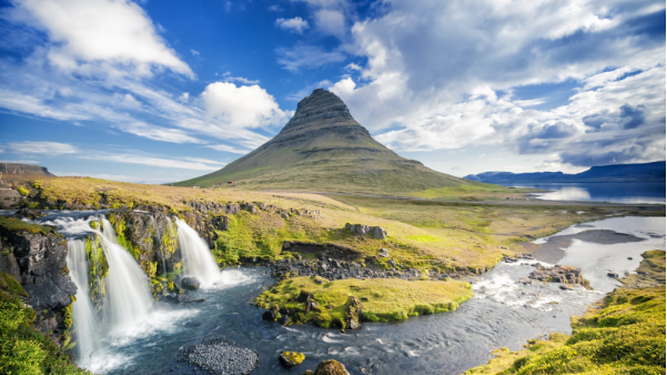

Islandia es el paraíso para los amantes de los paisajes y uno de los mejores viajes del 2020. Rodear la isla en coche recorriendo la carretera 1, parando en los lugares de mayor interés turístico, te puede llevar entre 10 días y dos semanas, aunque si dispones de menos tiempo no te preocupes, con una semana se puede plantear también un recorrido muy completo, eliminando algunas de las zonas más alejadas. Algo a tener en cuenta es que en Islandia no hay mucha infraestructura hotelera, por lo que es muy importante reservar con tiempo o plantear un viaje en autocaravana o, si vas en la época más calurosa, tienda de campaña. Durante los días del viaje tendrás la oportunidad de hacer increíbles rutas de trekking, pasear por glaciares, ver playas de arena negra, volcanes, la impresionante laguna glaciar Jökulsárlón, cascadas como las de Seldjalanfoss, Detifoss o Godafoss, ver ballenas o frailecillos, sorprenderte frente a paisajes de otro planeta como los de Landmannalaugar o bañarte en aguas termales, rodeado de la naturaleza más salvaje. ¿Te animas?
1600 €
volver a la home